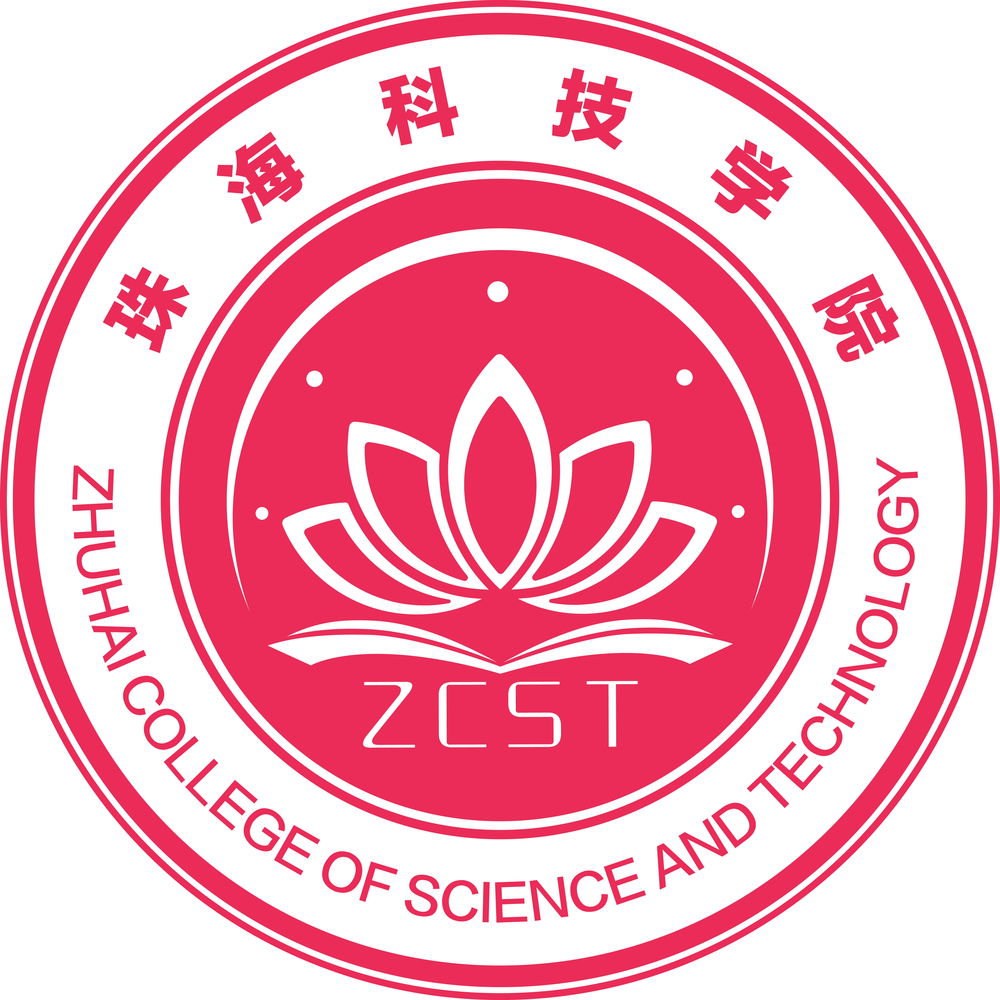

外省户籍、往届毕业，可以报考吗？
2026年普通专升本一般条件中，非广东户籍的相关通道仅面向符合条件的普通高校应届专科毕业生。退役大学生士兵另按专项政策核验。请查看政策原文，勿把本年度规则直接用于下一年度。

珠海科技学院普通专升本招生信息仅展示2026年招生与录取数据
输入专业名称，查看计划、录取人数、分数和排位。
ELIGIBILITY CHECK
仅适用2026年。报名已结束，下一年度须核对新政策；结果仅供参考，专业限制另行核验。
2026年普通专升本一般条件中，非广东户籍的相关通道仅面向符合条件的普通高校应届专科毕业生。退役大学生士兵另按专项政策核验。请查看政策原文，勿把本年度规则直接用于下一年度。
按2026年政策，需具有广东户籍连续满3年，基本医疗保险与基本养老保险在广东缴费均累计满1年，并符合专科毕业证日期等要求。已办理2025年12月自考毕业但暂未领证的情形，须按文件进行毕业情况验证。
免文化课考试不等于完全免考。学校按专项简章组织综合考查；立功奖励等特殊情形另按政策执行。资格和前置专业要求仍须审核。
不能据此确定。计划、报考人数、试题难度、科目组和志愿情况都会变化。不同科目或不同口径的排位也不能直接比较，最终以当年正式投档录取为准。